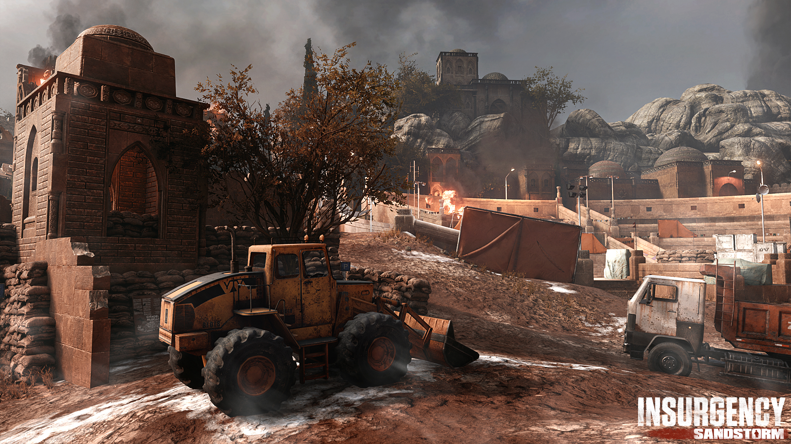

[.: TBT :. Servidor BR[
O jogo
Insurgency: Sandstorm é um game tático multiplayer de tiro em primeira pessoa desenvolvido pela New World Interactive e publicado pela Focus Home Interactive . O jogo é uma sequência do videogame Insurgency de 2014. Situado em umaregiãofictícia do Oriente Médio sem nome, o jogo descreve um conflito entre duas facções: "Segurança", vagamente baseada em vários militares mundiais (especificamente as forças da OTAN , SOCOM dos Estados Unidos, Forças Armadas do Iraque , Forças Armadas Afegãs , Forças Armadas da Síria e YPG curdoe YPJ ) e "Insurgentes", vagamente baseados em vários grupos militantes (especificamente ISIL , o Talibã e a Al-Qaeda )
Operação Exodus
A Operação Exodus, é a mais nova atualização do game Insurgency Sandstorm , esta atualização adicionou ao game o novo mapa Cidadel. O mapa é um museu que virou zona de guerra, atravessando trincheiras lamacentas, navegando em túneis extensos e lutando em um antigo anfiteatro.

A atualização também conta com duas novas armas secundárias disponíveis para todas as classes: O MR 73 para Segurança em 4 pontos de abastecimento e a Desert Eagle para Insurgentes em 5 pontos de abastecimento. Ambas as armas suportam Optic, Barrel e outras atualizações, incluindo um carregador de velocidade para o MR 73. Essas novas armas de fogo farão você abandonar sua principal por algum poder de parada manual.


Operação: Exodus apresenta um espectro de personagens de forças regulares a irregulares. Os insurgentes incluem cidadãos rebeldes que usaram máscaras para lutar por suas casas. Enquanto isso, a segurança é cortada sem abastecimento e seu equipamento mostra o desgaste da batalha.